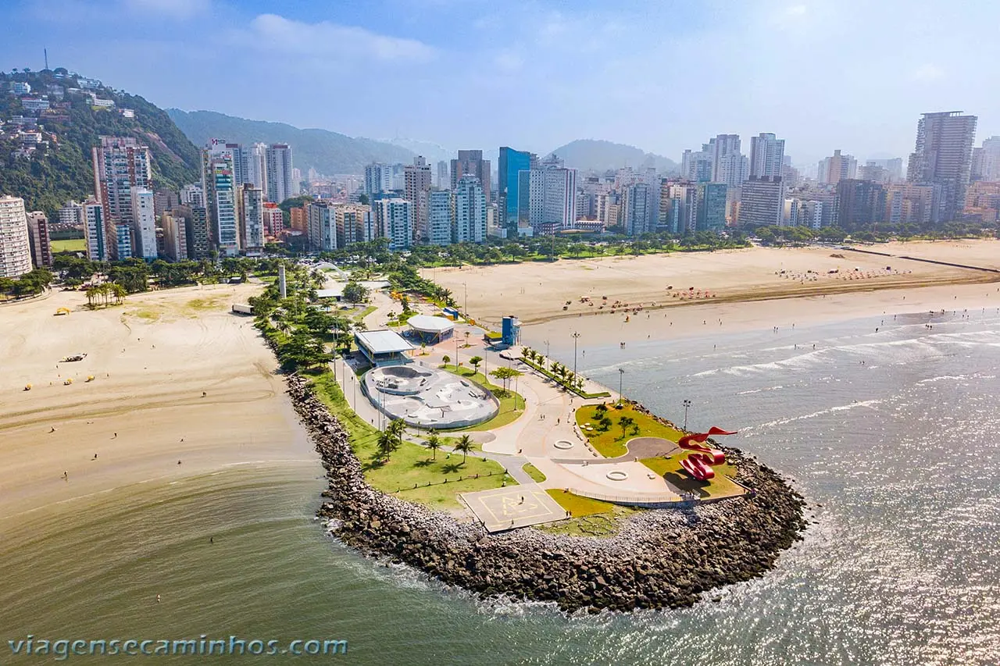
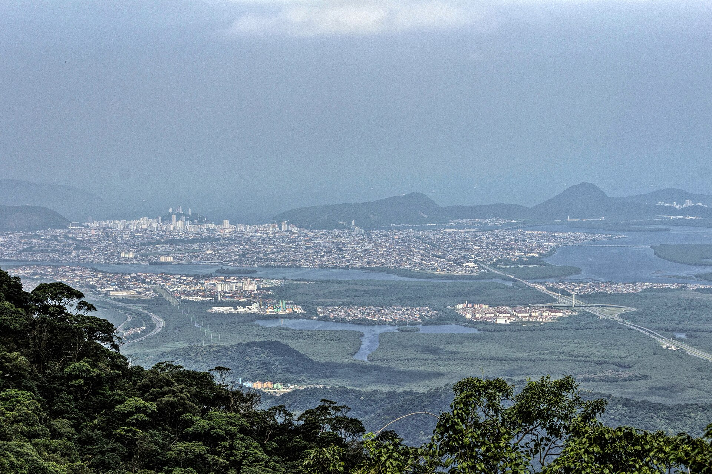
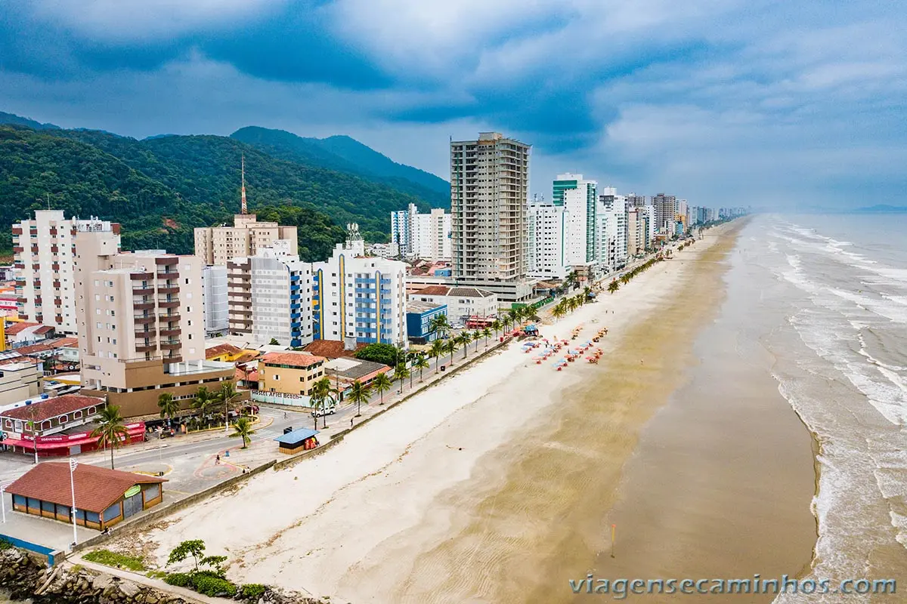
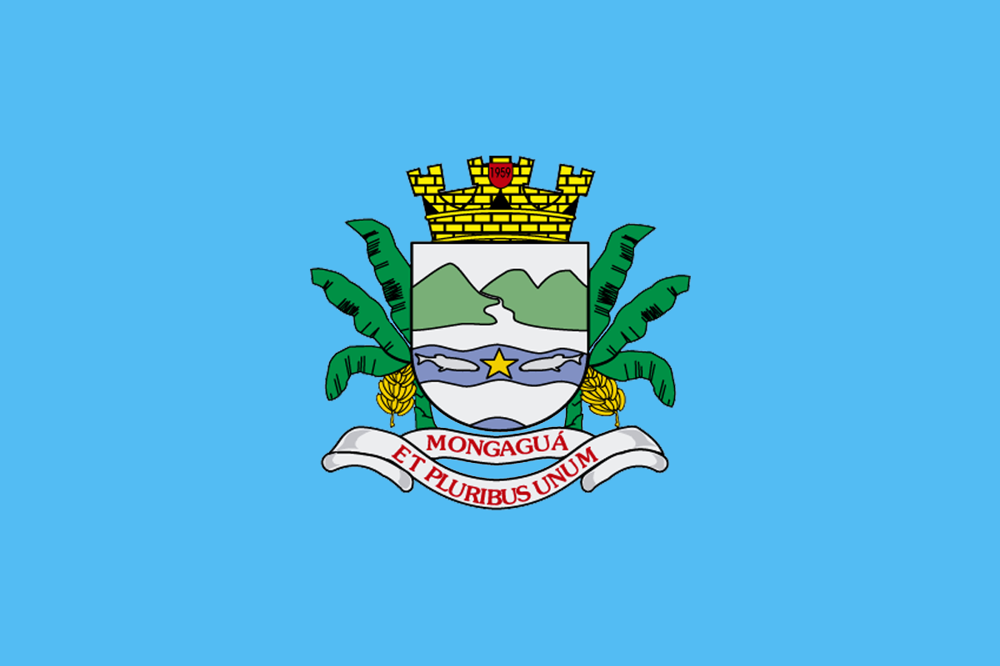
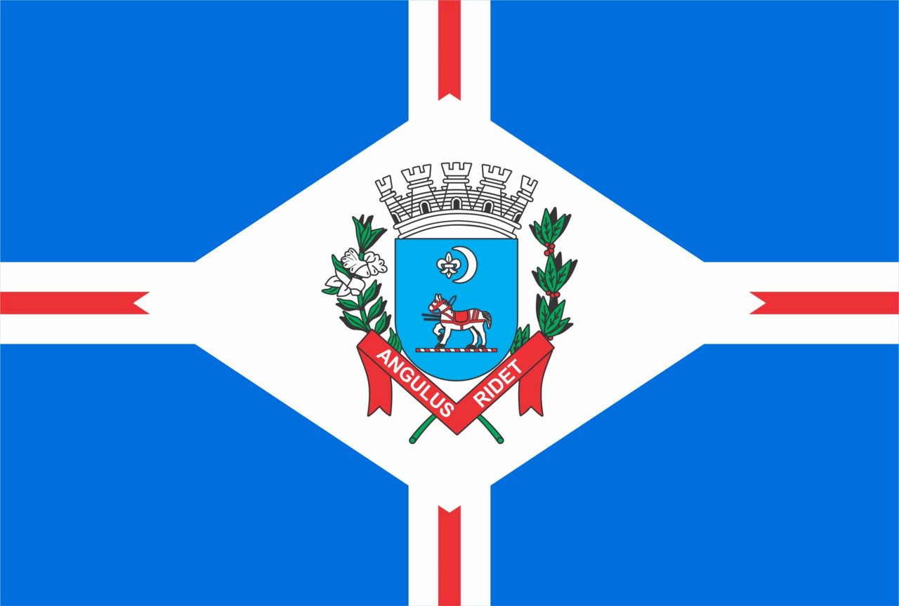
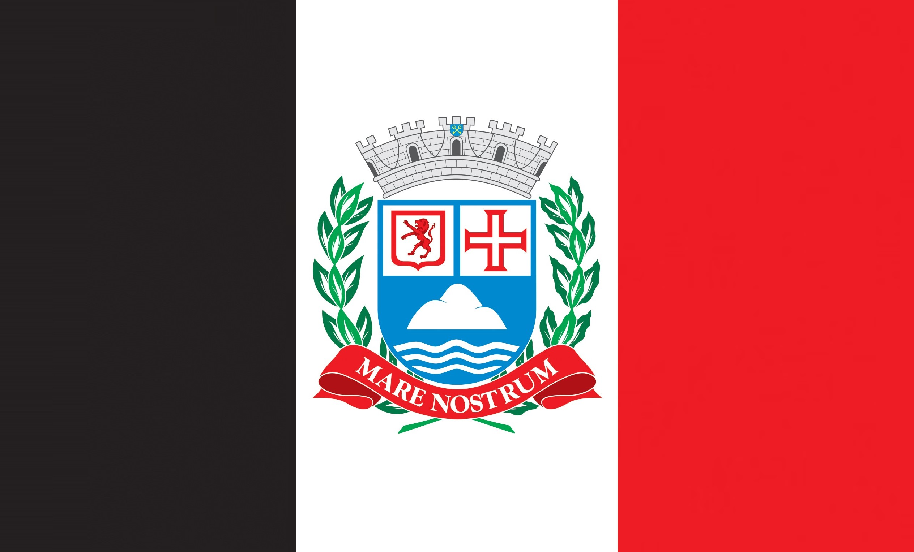
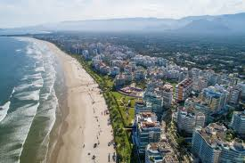
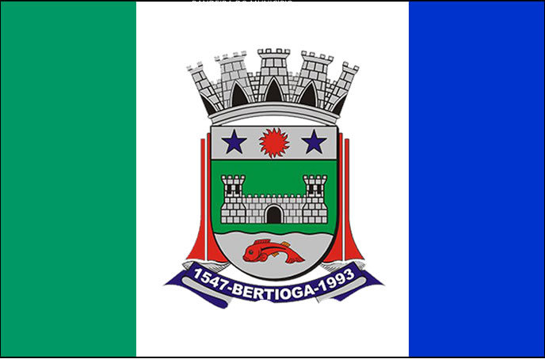

Municípios da Baixada
Um pouco sobre cada cidade, com lugares para conhecer e histórias que fazem parte da região.

Santos
Maior jardim de praiaSacramentado pelo Livro dos Recordes, o maior jardim frontal de praia do mundo acompanha seis praias em sete quilômetros de extensão.
Conhecer Santos

São Vicente
Primeira vila do BrasilFundada em 22 de janeiro de 1532 por Martim Afonso de Souza, marcou a chegada da colonização oficial portuguesa ao litoral brasileiro.
Conhecer São Vicente
Cubatão
Serra do Mar e trilhasCercada pelos contrafortes da Serra do Mar, guarda a Trilha de Padre Anchieta, cachoeiras e o Jardim Botânico em área de preservação.
Conhecer Cubatão

Guarujá
Ilha de Santo AmaroOrigens ligadas a 1534 na antiga Ilha do Sol (Santo Amaro), destacando-se pelo papel estratégico de suas fortalezas e praias exuberantes.
Conhecer Guarujá

Mongaguá
Águas e naturezaÁrea percorrida desde 1532 entre os rios Mongaguá e Aguapeú, antigo pouso de viajantes com rios, cachoeiras e praias agradáveis.
Conhecer Mongaguá

Itanhaém
Fundada em 1532Com formação histórica ligada a Martim Afonso e aos jesuítas, tornou-se Cabeça de Capitania em 1624 com jurisdição de grande relevância.
Conhecer Itanhaém

Praia Grande
História e orlaHabitada por pescadores desde o século XIX, teve seu desenvolvimento impulsionado pelo Forte de Itaipu e pela histórica Ponte Pênsil.
Conhecer Praia Grande

Bertioga
Forte de São JoãoNa divisa com o litoral norte, abriga o Forte de São Tiago (São João) de 1532 e guarda a memória histórica do alemão Hans Staden.
Conhecer Bertioga

Peruíbe
Aldeamento jesuíticoOrigens ligadas à missão de São João Batista no século XVI, com rica herança jesuítica e localização estratégica de defesa costeira.
Conhecer PeruíbeSobre a Região
A Região Metropolitana da Baixada Santista está localizada no litoral paulista e reúne nove municípios com rica história e vocação portuária e turística.
Sobre a Região
A Região Metropolitana da Baixada Santista está localizada no litoral paulista sendo sede do Porto de Santos, o maior e mais importante complexo portuário da América do Sul, em torno do qual se desenvolveu a economia regional. É a região paulista que possui o menor número de municípios (nove), ocupando apenas 1% do território estadual, e a segunda maior densidade demográfica do Estado.
Importância Econômica
Abriga o principal ponto de escoamento da produção brasileira, o Porto de Santos. Está estrategicamente situada a menos de 100 km da capital São Paulo e das indústrias da região do ABC, conciliando atividades industriais, serviços portuários e praias turísticas ao longo do litoral.
Transporte da Região
A região possui excelentes conexões de transporte viário através do Sistema Anchieta-Imigrantes, Rodovia Padre Manoel da Nóbrega e a BR-101. Duas linhas ferroviárias atravessam o Estado e desembocam no Porto de Santos, além do VLT ligando pontos centrais da Baixada.